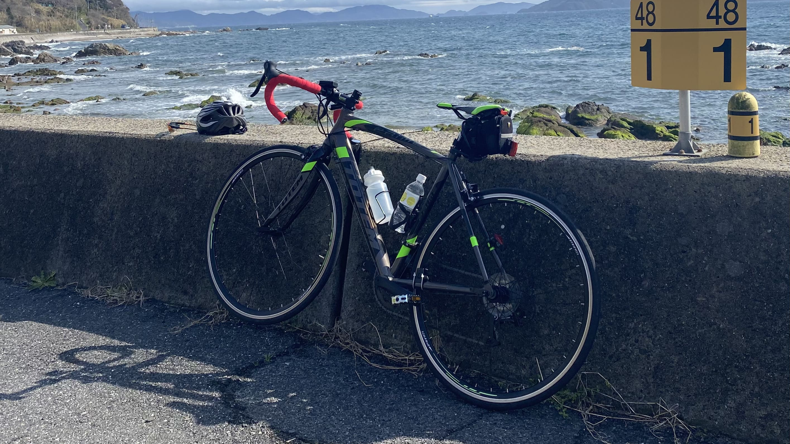
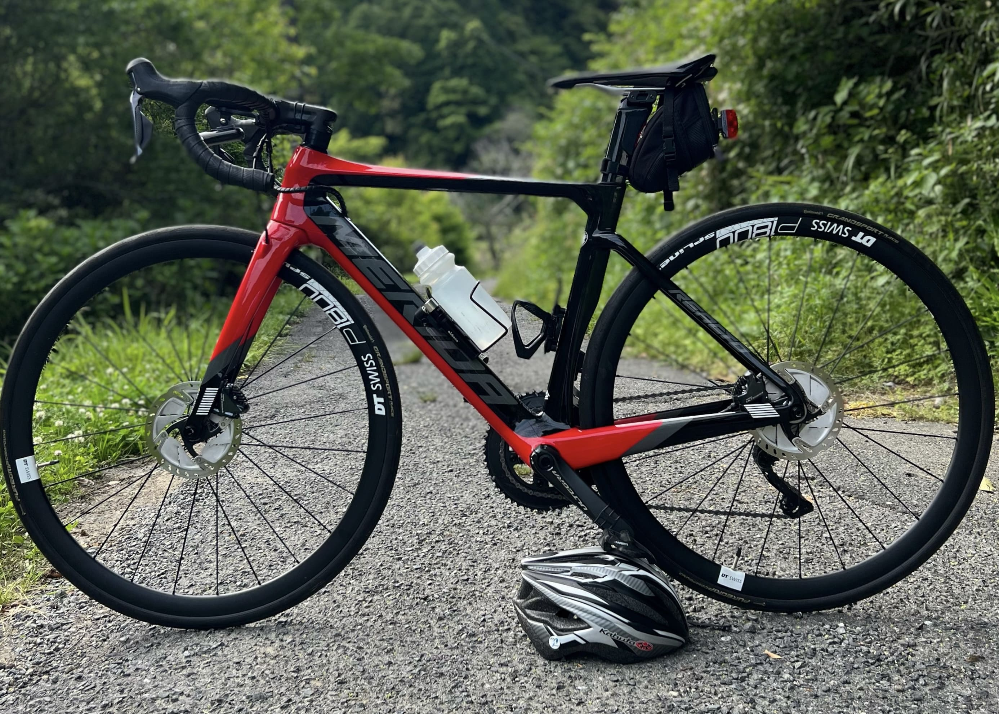
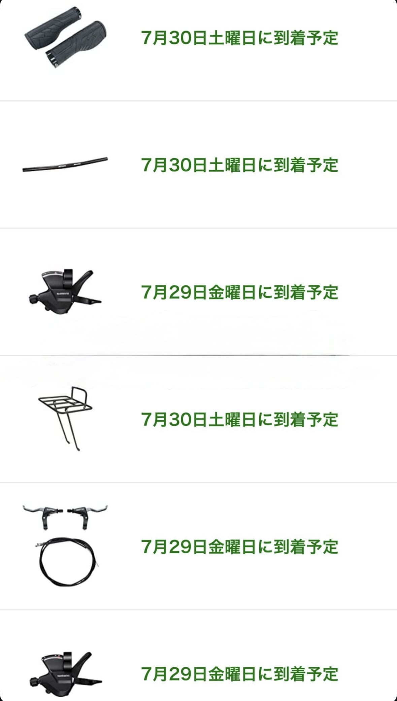
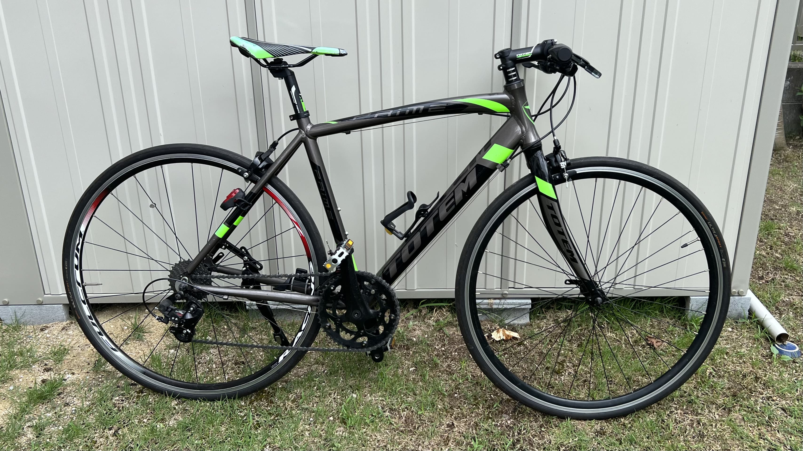
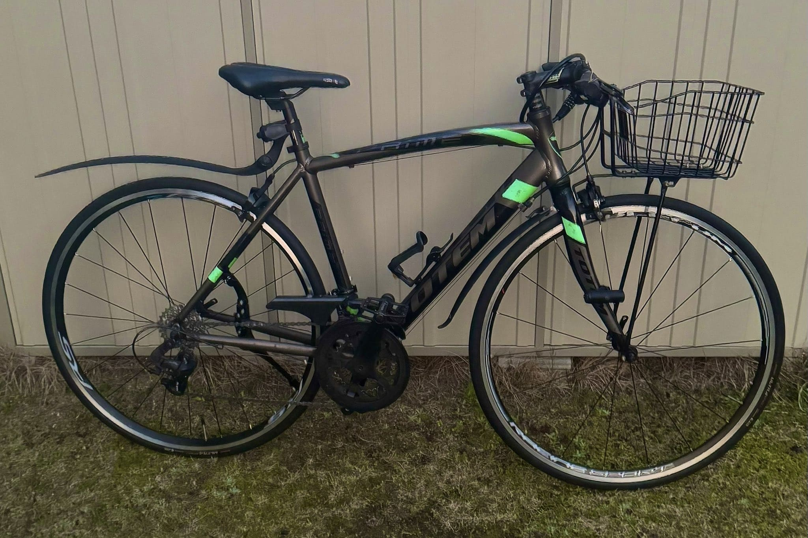

僕は友達からロードバイクを借りた時の感動が忘れられず、お小遣いを貯めて中学2年生の時にロードバイクを購入しました。

(初めて買ったtotem製ロードバイク)
自転車は修理代が高いことに気づき、この時から自分でメンテナンスをするようになりました。
パンク修理などの簡単な修理から始めました。
それから、タイヤ交換、ブレーキ調整、変速機調整などを自分でできるようになりました。
高専入学祝いに親から新しいロードバイクを買ってもらいました。
それがこのMerida製のロードバイクです。

(REACTO DISC 7000-E)
これはカーボン製のフレームで、一般的なアルミ製のフレームよりも軽く、振動吸収性が高いです。
重量は8.2kgで、片手で余裕で持てるくらい軽いです。
一般的なママチャリが18~22kgなのでその軽さがわかると思います。
変速機はシマノのULTEGRA Di2を搭載しており、電動変速で非常に快適です。
ブレーキはディスクブレーキを搭載しており、制動力が高く、雨天時でも安定した制動力を発揮します。
元々あったtotem製のロードバイクは通学用に改造しました。
これがまためちゃめちゃ大変でした。
規格が全く違うので、合う部品がなかなか見つからず、
1から10まで全部自分で調べて、部品を選んで、組み立てました。

その後なんとか完成しました。
これが
こうなって

こうなりました。

これからもメンテナンスをしながら大事に乗っていきたいと思います。